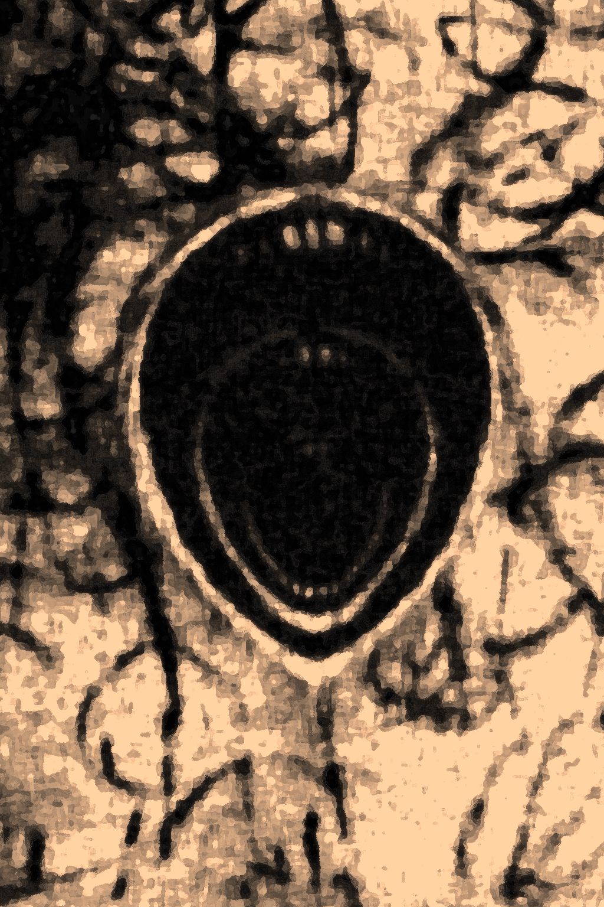

S01 - O Começo

O grupo se conheceu ao se inscrever na Guilda dos Aventureiros. Uruk, líder da Guilda, tinha o hábito de unir recém-chegados em equipes, acreditando que aventureiros em grupo sobreviviam mais tempo.
O primeiro contrato levou-os ao templo de Ûlfred, o Bravo. Durante a missão, enfrentaram indivíduos sob influência de algo que não sabiam nomear. Ao final, não levaram todos os corpos - o que resultou no pagamento parcial da recompensa.
Ao retornarem à Guilda, ouviram uma discussão entre Aya e Zack. Em seguida, Uruk ofereceu um novo contrato: investigar desaparecimentos na vila Tiefling - uma oportunidade de se estabelecerem na Guilda.
Na vila, encontraram Trudd, Escolhido de Mirella, que já investigava os acontecimentos, sem sucesso. Na mesma noite, Aya pediu ajuda: Tikka havia desaparecido.

O grupo impediu o pior, mas o sussurro permaneceu. Aya revelou que sabia do risco por causa de um desenho de três bocas - associado ao chamado “alinhamento forçado”, que viu no templo de Alberon. Ao observarem o desenho, os sussurros se intensificaram, como se exigissem que alguém cedesse. Num impulso, rasgaram o papel, e a influência cessou.
Trudd, ao ver o símbolo, declarou ter compreendido o que estava acontecendo e partiu para o templo de Alberon. O grupo o seguiu em seguida.
No templo, encontraram registros sobre o Eco e Aurora - mãe de Kalymos e desceram às ruínas inferiores. Na arena subterrânea, localizaram o corpo de Trudd.
Ao encarar a Dama de Ferro, a realidade se rompeu. Houve apenas um vazio atravessado por uma reza distante. Quando o mundo retornou, a entidade estava viva. Após derrotá-la, encontraram uma runa.
Ao voltarem à vila, não havia ninguém. Seguiram para Leindell. A cidade os recebeu com olhares desconfiados. A Taverna da Guilda estava vazia. No mural, apenas um contrato rasgado ao meio, preso por uma adaga.
Uruk os aguardava:
“Vocês sabem o que fizeram? Vocês perturbaram uma coisa antiga”
“E agora tem gente perguntando quem deu autorização”